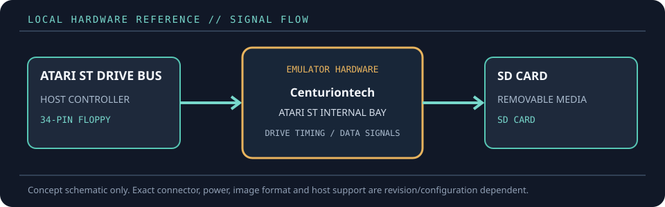

[ FLOPPY EMULATORS // IDENTIFIED HARDWARE ]
GOEX Drive for Atari ST, revision 2024
A model-specific record for a physical floppy-drive emulator. It distinguishes the emulator hardware, removable media and host-facing drive signals; firmware support alone does not establish compatibility with a particular machine.

MODEL IDENTIFICATION: PRODUCT RECORD: GOEX Drive for Atari ST, revision 2024. Compatibility is conditional on the actual host’s connector, controller, signal conventions, drive geometry, firmware and media configuration; do not infer fit from connector count or nominal drive size alone.
Recorded specifications
| Cataloged part | GOEX Drive for Atari ST, revision 2024 |
|---|---|
| Manufacturer / project | Centuriontech |
| Product family | Atari ST-specific SD floppy emulator; 2024 product revision |
| Drive bay / physical fit | Internal Atari ST 3.5-inch floppy bay with ST-specific front/button fit; the vendor identifies compatibility across short- and long-button case variants. |
| Host interface / power | Standard 34-pin floppy interface to the Atari ST drive cable, with model-specific drive-select/configuration as required. SD card socket, thumb controller and onboard sound. |
| Removable media / image format | Full-size SD card (microSD through an adapter); Atari ST .ST and .MSA images are core formats. The supplied FlashFloppy firmware also supports other formats according to its documentation. |
| Host compatibility | Atari ST family, including ST, STF/STFM, STE and Mega ST variants as stated by the vendor. Verify exact case-button form and host revision before fitting. |
| Variants and identification | This record is specifically the GOEX4ST revision 2024, not a generic Gotek installation. It is supplied with FlashFloppy; optional display/accessory variants should be recorded separately. |
Compatibility and handling
- The proprietary case/bracket fit is for Atari ST drives; it is not a universal 3.5-inch bay replacement even though the electrical interface is familiar.
- FlashFloppy image-format support describes firmware capabilities, not guaranteed support for every Atari image or copy-protection scheme.
- Retain the supplied firmware/configuration and record the SD-card format and jumper settings with the installation.
Before installation, compare the emulator’s exact revision and interface against the host service documentation. Confirm connector keying and pin one, power voltage/polarity, drive select, motor/disk-change signals, expected density and image geometry. Preserve a read-only copy of original disk images and configuration files before experimenting.
Model notes
This record is specifically the GOEX4ST revision 2024, not a generic Gotek installation. It is supplied with FlashFloppy; optional display/accessory variants should be recorded separately.
Full-size SD card (microSD through an adapter); Atari ST .ST and .MSA images are core formats. The supplied FlashFloppy firmware also supports other formats according to its documentation.
Sources & further reading
- Centuriontech — GOEX Atari ST drive, rev.2024Manufacturer product record for the Atari ST-specific 2024 hardware.
- FlashFloppy — Gotek-compatible floppy emulator firmwareUpstream firmware documentation for supported image formats and configuration.
Manufacturer statements describe product capability, not guaranteed operation on every revision of the named host. Confirm current manual, firmware and wiring before installation.